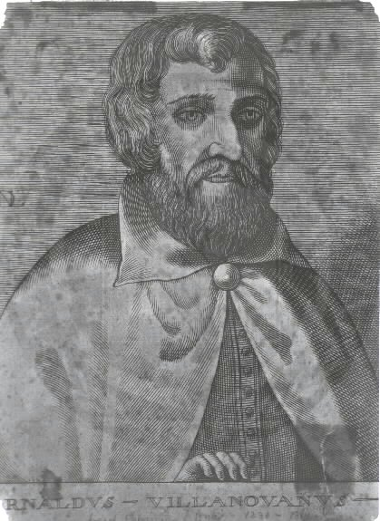
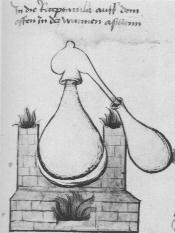
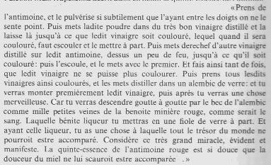
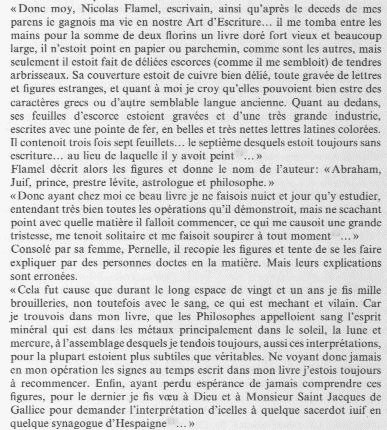
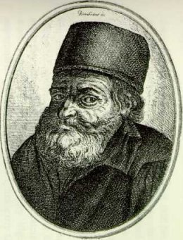
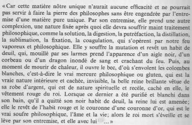
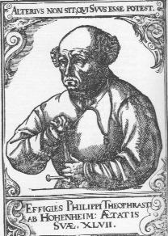
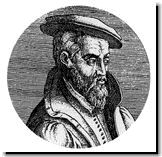
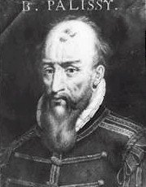

Une autre
recette de teinture de pourpre utilisant le kenkel (murex) est intéressante
car elle rejoint certaines considérations de Fulcanelli dans la
confection d'un fixateur particulier qui semble intervenir dans la 3ème
partie du Grand oeuvre et dont on trouve l'équivalent cabalistique
sous les termes de sabot
(entrave)
ou : loup(mors
armé de pointes)
ou
encore :murex (mors
après de pointes).
Ce fixateur est évoqué dans la section des blasons
alchimiques.
Le Livre des
Prêtres (Bibliothèque Nationale, Mss latin 6514) date
de cette époque et le mot orichalque[bronze
ancien, du grec oroV,
montagne et khalkoV,
airain ; ces deux termes ont une signification des plus importantes ; nous
y reviendrons]
y est désigné comme laiton.
C'est ici qu'il nous
faut évoquer le Grand Miroir du Monde dont le Speculum
Naturale constitue une partie. Cet ouvrage énorme (dix volumes
in-folio) est dû à Vincent de Beauvais,
lecteur du roi de France Louis IX. Dans cette somme, De Beauvais se réfère
au Livre des Aluns et des Sels de Rhasès ; là encore,
il n'est point question de transmutation ; d'une série de notes sur
des teintures, De Beauvais tire la conclusion qu'il n'est pas possible de
:
«rendre
les métaux artificiels à l'identique des métaux naturels
et à faire en sorte qu'ils supportent l'épreuve du feu
».
¯
Du XIIIe
siècle jusqu'au début du XVIe siècle, les
Occidentaux furent à même de s'initier dans les sciences mystiques
et occultes de l'Orient ; l'occupation de l'empire grec par les Français,
pendant la première moitié du XIIIe siècle,
y avait été pour beaucoup et un grand nombre de manuscrits
furent rapportés de Constantinopole en France, puis de là,
répandus dans les autres pays de l'Occident. F. Hoefer [Histoire
de la Chimie, 2ème époque]
nous dit que cette période fut l'âge d'or de la chimie des
idéalistes, c'est-à-dire de l'alchimie. Le témoignage
des sens était récusé par les physiciens comme par
les philosophes. La seule méthode reconnue était celle qui
partait de l'absolu, de la cause suprême, pour revenir après
de nombreux détours dans la sphère sub-lunaire. La religion
prétendait alors donner la clef de toutes les connaissance humaines
et ses mystères devaient introduire l'homme dans le sanctuaire de
la science. On devait au XIXe siècle, retrouver un peu de cet état
d'esprit à travers le positivisme, battu en brêche par la
« catastrophe ultra-violette » qui devait déclencher
une nouvelle révolution scientifique avec Max Planck et Boltzmann.
L'alchimie, à cette époque, était étroitement
liée à la philosophie scolastique et les Météorologiques
d'Aristote étaient invoquées, par les alchimistes, comme
une autorité supérieure tout comme la Physique du Stagirite
l'était par les philosophes.
On sait bien que
la proposition selon laquelle « les espèces
ne peuvent pas être transformées les unes dans les autres
» fut combattue par les alchimistes dont certains pensent encore
qu'ils admettaient la transmutation des métaux dans le sens le plus
absolu. Les plus sages, à la tête desquels il faut placer
Albert le Grand et Roger Bacon, adhéraient avec quelques restrictions,
à cette proposition d'Aristote. Clercs et laïques se livraient
à l'envie à l'étude de l'alchimie : on ne compte
plus les moines, les rois, les évêques et même un pape,
qui pratiquèrent l'Art sacerdotal. Certains savoirs techniques purent
être mis à profit par les chercheurs de cette époque
: la poudre à canon dont la connaissance procédait d'un juste
dosage de soufre, de salpêtre et de charbon ; la découverte
de l'imprimerie, la boussole, la fabrication des verres colorés
et bientôt des émaux.
Albert
le Grand :
encyclopédie vivante du Moyen Âge, Albert naît en 1193
et enseigne la philosophie à Ratisbonne, Cologne, Strasbourg et Paris
où le nom de la place Maubert en rappelle le souvenir. Il fut nommé
évêque de Ratisbonne. Mais il se démit de ses fonctions
épiscopales, préférant l'étude des sciences
aux dignités de l'Eglise. Il a décrit la préparation
de l'acide nitrique
qu'il appelait eau
prime ; une eau seconde qui était une espèce d'eau
régale obtenue par mélange de
4 parties d'eau prime avec une partie de sel ammoniac. Pour avoir l'eau
tierce, on devait traiter le mercure blanc par l'eau seconde. L'eau quarte
était le produit de distillation obtenu à partir de l'eau
tierce, qui, avant d'être distillée, devait être enfouie
dans du fumier de cheval. Albert le Grand est, de tous les auteurs, celui
qui a le plus écrit. Ses ouvrages forment vingt et un volumes in-folio
; il se peut qu'ils ne soient pas tous authentiques. Quoi qu'il en soit,
ces ouvrages traitent de chimie, de théologie et de philosophie.
Albert le Grand fut-il alchimiste ? On serait tenté de le croire
par la lecture de son De alchimia [Theat.
chim., t. II] :
"J'ai
connu de riches savants, des abbés, des directeurs, des chanoines,
des physiciens et des illettrés, qui avaient perdu leur argent et
leur temps dans les recherches de cet art. Néanmoins, cet exemple
ne m'a pas découragé. Je travaillais sans relâche,
je voyageais de pays en pays, en me demandant : Si la chose est, comment
elle est ? Enfin, j'ai persévéré jusqu'à ce
que je sois arrivé à reconnaître que la transmutation
en argent et en or est possible."
E. Chevreul a examiné
les règles
de bonne conduite qu'Albert a édictées et les conditions
que doit, selon l'auteur, remplir un alchimiste. Dans son De rebus metallicis
et mineralibus libri, l'auteur attache une grande importance aux propriétés
physiques des métaux et notamment à leur couleur :
"La
couleur blanche provient du principe humide, qui est le mercure. Le soufre
est le principe de la coloration jaune des métaux. C'est encore
la substance du soufre qui leur donne de l'odeur."
La question des couleurs
est abordée dans une section [l'humide
radical métallique]. Albert
décrit dans son De rebus un minéral qu'il désigne
par
le nom de marcassite et qui ne paraît être qu'une pyrite zincifère
ou arsénifère. Il en indique la composition en faisant observer
que, par l'application de la chaleur, il se produit du soufre et une chaux
métallique. il savait que le cuivre blanc était, non pas
du cuivre transformé en argent, mais un alliage qui, chauffé,
dégage de l'arsenic et reprend l'aspect primitif du cuivre. Dans
le même traité, se rencontre, aussi pour la première
fois, le mot vitreolum, appliqué à l'atrament vert [sulfate
de fer]. Dans le Compositum
de compositis que nous abordons ailleurs, nous voyons qu'Albert
ne se faisait guère de doute sur l'or des alchimistes :
"Car,
il ne réjouit pas le coeur de l'homme, il ne guérit pas la
lèpre, et il irrite les plaies ; ce que ne fait pas l'or ordinaire."
Certains alchimistes
eux-mêmes ne croyaient donc pas à la transmutation des métaux
imparfaits en or véritable. Leur or était un composé
qui rappelait la couleur de l'or. Albert le Grand a démontré
le premier, par la synthèse, que le cinabre qui se rencontre dans
les mines, et dont on retire le régule de mercure, est un composé
de soufre et de mercure ; car il remarque qu'en sublimant le mercure avec
le soufre, on produit du cinabre sous forme d'une poudre rouge brillante.
Il connaît le cuivre blanc qu'il ne confond pas avec l'argent véritable.
Il sait préparer la potasse caustique [à
la chaux] et appelle la potasse alcali
[il conseille aussi de la conserver
dans un lieu sec et à l'abri du contact de l'air].
Souvenons-nous d'E. Canseliet quand il dit qu'il faut « réserver
» une certaine substance à une époque de l'oeuvre.
Il ne peut s'agir que d'une substance qui doit être conservée
dans des conditions précises. La préparation de l'azur [azurium]
est indiquée de la façon suivante :
"Broyez
ensemble deux parties de mercure, une partie de soufre et
une partie de sel ammoniac. Calcinez ce mélange dans un creuset
; et lorsque vous verrez une fumée bleue, vous arrêterez l'opération.
En brisant le creuset, vous y trouverez le noble azur."
Cet azur ne semble
pas être celui dont nous parle Berthelot dans son Introduction
à la chimie des Anciens : l'armenium, matière bleue,
qui paraît être la cendre bleue ou l'azurite. Et le ceruleum
ou azur [Pline, hist. Nat.,
XXXIII, 57], mot qui désigne
à la fois une laque bleue, dérivée du pastel, et un
émail bleu, fritte ou vitrification, obtenu avec du natron, de la
limaille de cuivre et du sable fondu ensemble. Vitruve [De
Architectura, livre VII, Les Belles Lettres, Paris, 1995]
décrit le caeruleum, terme générique, correspondant
au grec cuanoV
ou bleu azur, qui désigne plusieurs substances bleues naturelles
ou artificielles. Dans le même traité, il donne la préparation
de l'acide nitrique qu'il appelle « eau prime » ou eau philosophique
au premier degré de perfection :
"Prenez
deux parties de vitriol romain, deux parties de nitre, et
une partie d'alun calciné ; soumettez ces matières
bien pulvérisées et mélangées à la distillation
dans une cornue de verre [...] Le liquide ainsi obtenu dissout l'argent,
sépare l'or de l'argent, transforme le mercure et le fer en chaux
[oxydes]" [Theat.
chim., t. IV]
Ce qu'Albert le Grand ne
dit pas, c'est l'importance du résidu qu'on obtient et que nous avons
analysé dans la section du tartre vitriolé. Suit une description
de l'eau seconde qui était une espèce d'eau
régale obtenue par mélange de
4 parties d'eau prime avec une partie de sel ammoniac. Pour avoir l'eau
tierce, on devait traiter le mercure blanc [chlorure de mercure] par l'eau
seconde. Albert dit que : « L'eau tierce est la mère
de l'eau de vie qui réduit tous les corps en leur matière
première ». L'eau quarte était le produit
de distillation obtenu à partir de l'eau tierce, qui, avant d'être
distillée, devait être enfouie dans du fumier de cheval pendant
quatre jours. Cette eau quarte, dont les alchimistes promettaient des merveilles,
était appelée vinaigre des philosophes, eau minérale,
rosée céleste, eau bénite, etc. Nous avons un autre
traité d'alchimie, intitulé De Philosophorum lapide
[Theat. chim, t. IV],
sans doute apocryphe, car d'après F. Hoefer, on y voit pas le style
simple de l'auteur. Il paraît rédigé dans un langage
mystérieux, énigmatique et obscur. Il semble qu'on puisse
en dire autant d'autres traités attribués aussi à Albert
:
- De
concordantia philosophorum in lapide [Theat.
chim., t. IV] ;
- Secretorum tractatus
;
- Breve compendium
de ortu metalorrum [Theat. chim., t.
II] ;
- Philosophia pauperum
Dans un autre traité
nommé De mineralibus mundi, la préparation
de la poudre à canon semble être évoquée.
Parlons à présent
de Thomas d'Aquin
(1225-1274) : disciple d'Albert le Grand, Thomas d'Aquin eut, en dehors
de ses immenses travaux théologiques, assez de loisir pour s'occuper
d'alchimie. Son traité sur l'essence des minéraux [qui
fait partie du tome V du Theatrum Chemicum] contient un passage
des plus intéressants sur notre sujet : la fabrication des pierres
précieuses artificielles :
"Il
y a des pierres qui, bien qu'elles soient obtenues artificiellement, ressemblent
tout à fait aux pierres naturelles. C'est ainsi qu'on imite, à
s'y méprendre, l'hyacinthe [aigue-marine]
et le saphir.
L'émeraude se fait avec la poudre verte de l'airain. La couleur
du rubis s'obtient
avec le safran de fer."
St Thomas ajoute
que l'on peut imiter la topaze
en chauffant la masse vitreuse avec du bois d'aloès, et que tout
cristal peut être coloré de diverses nuances. Il nous dit
aussi ce qu'est le lait de vierge des alchimistes : il se prépare
en faisant dissoudre de la litharge
dans du vinaigre et en traitant la solution par le sel alcalin (alkali
fixe). Il s'agit donc de l'eau blanche des pharmaciens. De la pierre philosophale,
il n'est, là encore, pas question dans cette oeuvre : Thomas l'ignore
comme Albert le Grand.
Venons en maintenant à
des auteurs plus connus en tant qu'alchimistes et dont nous possédons
les oeuvres, assez souvent déclarées apocryphes.
Artephius
est [XIe siècle
ou XIIe siècle d'après le Larousse, alchimiste
juif ou arabe] très connu des
alchimistes par son livre où il donne des éléments
ayant trait à la constitution du feu secret : LeSecret
livre d'Artephius (Paris, Marette, 1612) -cité par
Fulcanelli dans Les Mystères (p.106)- est inclus dans Trois
Traitez de la Philosophie naturelle à propos de la composition
du feu secret. L'auteur se vantait de pouvoir prolonger la vie au delà
de mille ans à l'aide « d'une merveilleuse
quintessence »...Mais il n'en donna pas la recette. Il
croyait à la végétation des minéraux en l'assimilant
à celle des végétaux, idée absurde a priori
mais redécouverte par les minéralogistes français du
XIXe siècle :
"Toute
plante est composée d'eau et de terre ; et pourtant il est impossible
d'engendrer une plante avec de l'eau et de la terre. Le soleil vivifie
le sol ; quelques-uns de ses rayons pénètrent plus profondément
que d'autres au sein de la terre, ils s'y condensent et forment ainsi
un métal brillant, jaune, l'or, consacré à l'astre
du jour. Par l'action du soleil, les principes des métaux, les
molécules de soufre et celles de mercure se rassemblent, et, suivant
que les unes ou les autres l'emportent en quantité, elles engendrent
l'argent, le plomb, le cuivre, l'étain, le fer."
Artephius
définissait le corps comme :
«
quelque chose de tout à la fois apparent et latent.
La partie apparente, c'est l'aspect et l'étendue du corps ; la partie
latente, c'est son esprit et son âme »
Artéfius, sur
la vie duquel on ne sait à peu près rien, cite Adfar [1,
2, 3, 4,
5,], le maître de Morien, tandis
que lui-même est cité par Roger Bacon. On peut donc le placer
au XIe siècle, au temps de Calid et de Morien. On possède
donc d'Artéphius un Livre secet sur la pierre philosophale
[cf. section Chevreul
1] et un autre intitulé Clef
de sagesse [Theatr.
chimic., t. IV, Manget et Bibl. chim. , t. I, Salmon, Bibl.
des philosophes chimistes, Paris, 1632]
qui a fait l'objet d'une étude approfondie de Chevreul où
il a clairement démontré que cet ouvrage n'était pas
d'Alphonse X comme cela était rapporté jusqu'alors. Voila
ce qu'il nous dit :
"Celui
qui saura marier, engendrer, vivifier les espèces, produire la lumière
blanche, nettoyer le vautour de sa noirceur, sera honoré partout
; les rois même le respecteront. - Dans la putréfaction et
la solution apparaîtront trois signes, savoir : la couleur noire,
la discontinuité des parties, et l'odeur puante semblable à
celle des épulcres. La cendre qui reste au fond du vase est celle
dont les philosophes ont tant parlé ; c'est en elle que se trouve
le diadème de notre roi, ainsi que le mercure noir et immonde d'où
s'élève la couleur blanche, appelée oie [anser] ou
poulet d'Hermogène [pullus Hermogenis]. ainsi, celui qui sait blanchir
la terre noire possède le secret du magistère ; il peut ressusciter
le mort, après avoir tué le vivant. Et quand tu verras apparaître
la vraie blancheur resplandissante comme un glaive nu, il faudra toujours
continuer à calciner, jusqu'à ce que se manifestent la citrinité
et la rougeur étincelante. Dès que tu auras aperçu
celle-ci, tu loueras le Dieu très bon et très grand, qui
donne la sagesse, la candeur et la richesse à ceux qui les méritent,
et qui ôte ces trésors aux méchants, en les plongeant
dans la servitude de leurs ennemis. Louange et gloire à Dieu ! Ainsi
soit-il."
Dans le traité Clavis
majoris sapientiae [Clef
de sagesse], Artéphius insiste
sur le thème favori des Adeptes qui rapportent la génération
des métaux à l'influence des astres, et qui l'assimilent à
la génération des végétaux [1,
2].
a noter qu'on lit dans ce même traité -mais cela ne paraît
pas étonnant outre mesure à F. Hoefer- la préparation
du savon décrite sans ambiguité allégorique :
"Si
l'on prend de l'eau filtrée des cendres [potasse du commerce], et
qu'on fasse bouillir la liqueur, à un degré convenable, avec
de l'huile et d'autres substance semblables, on obtient le savon."
[Theat. chim., t. IV]
Zadith
est un auteur d'origine arabe, qui vivait probablement vers la fin du XIIe
ou au début du XIIIe siècle. Il est l'auteur d'un
petit écrit alchimique, la Table chimique, traduit de l'arabe
dans le Théâtre chimique [Senioris
Zadith, filii Hamuelis chimica, ex arabio sermone latina facta, Theatr.
chim., t. V]. Fulcanelli y fait allusion
et lui attribue même l'Azoth, habituellement rapporté à
B. Valentin car on ne rencontre pas l'Azoth dans le recueil allemand des
oeuvres attribuées à B. Valentin [Deux
Logis, p. 125]. Il s'attache dans
la Table chimique, à donner l'explication des images symboliques
des planètes et des métaux. Il est cité deux fois dans
la Toyson
d'or de Salomon Trismosin :
"
imitant encore en ceci Senior qui nous convie ainsi que font tous les autres
aux nuances nécessaires des matières contraires :«L'esprit,
dit-il, délivre le corps, et par cette délivrance l'âme
se tire hors des corps, puis on réduit ces mêmes corps en
l'âme : l'âme donc se change en un esprit et l'esprit de nouveau
se fait corps.»
et :
"Senior
en parle tout de même, traitant de ce sujet, voire encore en termes
bien plus clairs : « Il
y a, dit-il, une chose vivante qui n'est plus mortelle, ayant une fois
été confirmée et assurée de sa vie par une
éternelle et continue multiplication.»
Nous devons ici citer
aussi Haimon à
qui l'on doit une épître sur les quatre pierres philosophales,
tirant leur matière du microcosme [Theat.
chim., t. VI]. Rachaidib,
fils de Zetheïbid, portait le titre de philosophe du roi des Perses.
Dans un fragment d'alchimie, l'auteur prescrit de convertir les métaux
en or avec la teinture de safran [Artis
auriferae quam chimiam vocant. Basil. , 1610].
F. Hoefer se pose la question de savoir si Rachaidib ne serait pas l'auteur
d'une Allégorie de Merlin,
contenant le très profond secret de la pierre philosophale,
dans le Gynécée chimique [Ex
bibliothecae Vatic. exemplari edita, Romae, sans mention de date].
Cette allégorie se rapproche beaucoup des gravures du Splendor
Solis : la cuisson du vieillard représente la matière
qui doit être dissoute afin d epouvoir renaître, rajeunie et
cette régénération est marquée par la colombe
; le démembrement du corps est requis pour la purification par laquelle
va s'opérer le rajeunissement [réincrudation]
et la renaissance [regulus, dauphin].
L'allégorie de Merlin est la suivante :
Un
roi s'apprête à partir en guerre. Avant de se mettre en route,
il se fait apporter par un serviteur son « eau de prédilection
». A peine a-t-il bu que ses veines se gonflent et qu'il pâlit.
Il ne peut plus enfourcher son cheval et se fait emmener par ses soldats
dans une chambre claire et chaude afin d'y transpirer pendant un jour et
une nuit entiers l'eau qu'il a bue. Lorsque ses gens viennent le trouver,
il est mort. Ses parents, accablés, font venir les
plus célèbres médecins
d'Égypte et d'Alexandrie. Après quelques disputes de préséance,
les médecins égyptiens se mettent à l'oeuvre. Ils hachent
le roi en petits morceaux, les mêlent à leur médecine
et le ramènent dans la salle. Le roi ressuscite, on le lave et il
est rénové, mais il meurt à nouveau. Bien que les médecins
assurent que tout cela est nécessaire à sa résurrection,
ils sont chassés et traités d'imposteurs. Les parents veulent
alors enterrer leur fils, mais les médecins d'Alexandrie les retiennent
et leur promettent de ranimer le roi et de le rendre plus puissant. Il est
à nouveau mis en pièces, lavé et séché.
La médecine avec laquelle on le traite à présent consiste
en une part de sel armoniac, deux parties de nitrum alexandrinum, des cendres
et de l'huile de lin. On met le tout dans un creuset dont le fond est troué
et qui est contenu lui même dans un autre creuset. Mis au feu, le
roi fond et s'éveille dans le second creuset, à nouveau en
vie et si puissant que tous ses ennemis se soumettent à lui de plein
gré. Son sang accomplit des merveilles : si on le mêle à
du vif-argent, il en résulte une pierre qui change le plomb et le
cuivre en or. Si on pile cette pierre et qu'on la mêle à du
sel et à de l'or et qu'on la malaxe avec du lait de chèvre,
elle est bonne « à toutes sortes d'usages ».
Les avis sur l'interprétation
de ce texte sont partagés : alors que Herwig Buntz [Alchimie,
Belfond, 1972] y voit un procédé
de purification de l'or, F. Hoefer en tient pour les deux principaux procédés
de l'analyse chimique, la voie sèche et la voie humide, le feu et
l'eau...En tout cas, les tyle rappelle le type gréco-syriaque du
Nouveau
Testament.
àSophar
était réputé roi d'Egypte et comme ayant inventé
une teinture royale propre à changer tous les métaux en or
[Aureum vellus, Rorschach,
1598]. Cette teinture n'était
autre chose qu'un sulfure d'or, traité pendant des semaines entières
-en faisant alterner le chaud et le froid, technique bien connue des bains
écossais- avec de l'esprit-de-vin retifié, appelé eau
ardente. Cet esprit-de-vin était rectifié, chose curieuse,
en le distillant à plusieurs reprises avec du tartre fortement calciné
[qui s'apparente au carbonate
de potasse sec]. F. Hoefer rapproche
ce sophar de Sopholat ou Xopholat, le grand roi disparu, comme l'appelle
Salomon Trismosin et qui, grâce à un arcane appelé suforethon,
aurait vécu plus de trois cents ans ! Selon Trismosin, cet arcane
aurait eu des pouvoirs extraordinaires. Chevreul dit que sophar aurait peut-être
été le maître d'Ostanès mais rien n'est moins
sûr.
àBubacar
: il s'agit d'un auteur d'origine arabe sur lequel on ne possède
point de renseignement. il a écrit un Liber secretorum Bubacaris.
il y traite de diverses sortes de sels et d'une liqueur, le kibrith
ainsi que d'eaux corrosives parmi lesquelles il y en a une qui se prépare
par la distillation du sel ammoniac avec une marcassite [vitriol].
Voyez la section
sur l'idée alchimique.
Roger
Bacon, né en 1214 à Hechester fit ses études
à Oxford et entra à 26 ans dans l'ordre des Cordeliers. Doué
d'une sagacité rare, il fit des découvertes merveilleuses
en optique et en chimie, ce qui lui valut le surnom de Docteur admirable.
Un goût prononcé pour les sciences physiques l'engagea à
apprendre les langues latine, grecque, hébraïque, arabe, afin
de pouvoir lire les Anciens dans le texte original. Pourvu d'une sagacité
extraordinaire, d'un esprit d'observation inconnu au Moyen Âge, et
surtout d'une persévérance à toute épreuve,
il devait arriver à des découvertes remarquables en astronomie,
en physiqe, en chimie et en médecine. Le premier, il s'aperçut
de l'erreur du calendirer Julien relativement à l'année solaire
et proposa en 1264 à clément IV, de la rectifier. Mais il
ne fut pas écouté...Ce fut surtout pour se sidées astronomiques
et astrologiques que R. Bacon s'attira l'accusation de magie et la haine
fanatique de ses contemporains. Quelques-uns seulement des écrits
de R. Bacon traitent de l'alchimie. Dans son Speculum
alchimiae, il parle d'une flamme produite par la distillation des
matières organiques...Serait-il
question ici du gaz d'éclairage
? Quoi qu'il en soit, comme presque tous les alchimistes, Bacon regarde
le soufre et le mercure comme les élééments fondamentaux
des métaux :
"La
nature cherche sans cesse à atteindre la perfection de l'or. Mais,
contrariée dans sa tendance et sujette à une foule d'accidents,
elle engendre des métaux moins parfaits, suivant le degré
de perfection du soufre et du mercure. - Les éléments peuvent
être retirés, soit des plantes, soit des substances
animales, soit des minéraux. Mais ce n'est pas tout : il faut ensuite
les combiner dans une juste proportion que l'esprit humain ignore."
Nous voyons ici que
Bacon envisage le poids de nature, comparé au poids de l'art ; le
premier n'est connu que de Dieu seul et en cela, Bacon poursuit la tradition
hermétique. L'alkali fixe, tiré des cendres des végétaux,
est aussi évoqué. Plus loin, il aborde l'athanor ou aludel
:
"...Il
s'agit de construire un fourneau qui ressemble à une mine...par
une disposition particulière qui ne permette pas aux matières
volatiles de s'échapper et qui concentre la chaleur d'une matière
continue.
Le vaisseau dont l'opérateur se sert doit être de verre,
ou d'une subtance terreuse ayant la résistance du verre ;
le col doit être étroit, et son orifice exactement fermé
avec un couvercle et du bitume. De même que dans les mines,
le soufre et le mercure sont préservés du contact immédiat
du feu par des matières terreuses intermédiaires, de même
aussi il faut avoir soin que le feu ne touche pas immédiatement
le vaisseau : il convient pour cela de l'entourer d'une enveloppe solide
qui puisse distribuer partout une chaleur égale."
R. Bacon parle aussi
d'un air « qui est l'aliment du feu » [aer
cibus ignis] et d'un autre air qui éteint
le feu : il est clair que le premier ne pouvait être que l'oxygène
tandis que l'autre était soit de l'azote, soit de l'acide carbonique.
Pour montrer que l'air contient l'aliment du feu, il rappelle que lorsqu'on
fait brûler une lampe emprisonnée sous un vase, elle ne tarde
pas à s'éteindre. Il donne enfin la composition de la poudre
à canon et montre qu'il est donc hors
de doute que l'on connaissait au moins dès le XIIIe siècle
le mélange explosif ayant pour base le nitrate de potasse [salpêtre].
Arnauld
de Villeneuve
naquit vers 1240 dans la région de Valence : ses traités les
plus importants sont le Rosarius Philosophorum,
le Lumen novum et l'Epistola ad regem Neapolitanum.
Il fut influencé par la Tourbe des philosophes
qu'il cite constamment. Pour ce qui nous intéresse, voici ce qu'il
pense de la « materia prima » : selon la conception d'Arnauld,
la substance originelle se compose uniquement de mercure :
"L'art
et la manière de transformer ce dernier en argent vif est une mutation
des natures en leur première racine..." (in Rosarius,
cité par Herwig Buntz dans l'Alchimie, Histoire, Technologie,
Pratique, Pierre Belfond, 1972)

FIGURE
XIV
(Villeneuve,
d'après un portrait du XVIIe siècle, Isaac Bullart,
Académie
des Sciences et des Arts, T. II, Bruxelles, 1695)
Comme presque tous les savants
de cette époque, Arnauld de villeneuve eut une vie très agitée.
Il parcourut l'Espagne, la France et l'Italie, laissant derrière
lui la renommée d'un médecin expérimenté et
d'un habile alchimiste. Il périt dans un naufrage sur les côtes
de Gènes vers 1319, à un âge très avancé.
Ses écrits alchimiques, imprimés dans la collection des Oeuvres
(Lyon, 1532, in-fol) ne donnent pas une haute idée, pourtant, de
son esprit d'observation. On y lit que le soufre, l'arsenic, le mercure
et le sel ammoniac sont les âmes des métaux, parce qu'ils s'élèvent
comme des esprits pendant la calcination :
"La
lune [argent]
est intermédiaire entre le mercure et des autres métaux,
comme l'âme est intermédiaire [medium]
entre l'esprit et le corps...L'âme est un ferment : de même
que l'âme vivifie le corps de l'homme, ainsi le ferment anime le
corps mort et altéré par la nature."
Il est
certain qu'Arnauld de Villeneuve avait une conception mystique de l'alchimie
; sa définition de «l'âme » est différente
de celle de la plupart des alchimistes, qui y voient le symbole de la teinture
(principe Soufre). Plus de vingt traités lui sont attribués
dont l'authenticité -pour les ouvrages alchimiques- est douteuse
; on citera : le De secretis naturae [où
l'on remarque une analogie entre le processus alchimique, la crucifixion
et la mise au tombeau du Christ, déjà énoncées
par Jean de Rupescissa, vers 1350].
Le second traité est l'Exempla de arte philosophorum (daté
en fait du XVe siècle) où les prophètes
de l'Ancien Testament sont cités comme garants principaux de la réalité
de l'alchimie. Sont peut-être authentiques le Rosarius philosophorium,
le Lumen novum et l'Epistola ad regem Neapolitanum. Il semble
qu'Arnauld ait appliqué essentiellement la doctrine d'Aristote puisqu'il
écrit :
"Car
transmuer la nature n'est rien d'autre que faire circuler
les éléments...ainsi le sec est changé en froid, le
froid en l'humide, l'humide en le chaud, et le chaud dans le sec, et ainsi
tu as tout le magistère."
Raymond Lulle
(mort vers 1330) assimile, quant à lui, la formation des métaux
aux fonctions des êtres vivants. On connaît un traité
qui lui est faussement attribué et qui a été composé
par un anonyme au XVe ou au XIVe siècle, Elucidarium
; il déclare dans sa préface expliquer les longues descriptions
contenues dans le Testament et le Codicille, pseudo-lulliens
tous deux, et cela de façon si brève et si claire «
qu'il ne sera plus utile, par la suite, d'écrire
d'autres livres ». Ainsi, en six courts chapitres, l'auteur
dit qu'il existe trois pierres, à savoir la minérale, l'animale
et la végétale et qu'il faut comprendre qu'il s'agit d'une
pierre unique, tirée du sol [minérale],
animée [animale]
et susceptible d'accroissement [végètale].
L'animation et l'accroissement ont lieu durant le processus opératoire.
Il ne

FIGURE
XV
Fourneau
avec cucurbite, chapiteau distillatoire et ballon de réception
(Livre
de la Sainte Trinité, Cgm 598, f. 77 v.)
faut qu'un vaisseau
pour l'oeuvre, à savoir deux cucurbites réunies par un chapiteau
d'alambic ; un seul fourneau est également nécessaire et
il doit être pourvu d'un feu « immortel ». L'auteur dit
encore que, bien qu'il y ait trois degrés de feu, l'on utilise en
fait qu'un seul feu fait de crottin de cheval et de chaux
vive. La cuisson doit durer dix mois au bout
desquels il faut teindre la pierre afin qu'elle puisse finalement teindre
et se multiplier. A notre sens, depuis Zozime de Panopolis, il s'agit d'un
des textes qui se rapprochent le plus de la réalité et qui
fait bien voir que le stade « animal » et « végétal
» sont en fait pratiquement confondus. La référence
à la chaux est essentielle
[nous
rappelons que l'antimoine saturnin d'Artephius fait
certainement allusion à « l'albâtre des Sages »
qui n'est autre que du carbonate de chaux]
;
la teinture doit
s'entendre au sens premier du terme ; la multiplication est là pour
« accroissement » d'un processus de cristallisation. Toujours
est-il que, sous la pression d'une diffusion de traités qui lui
étaient faussement attribués, plus de 500 ouvrages -on avance
même le chiffre de 4000 ! -, est apparue une nouvelle légende
alchimique autour de cette figure et cela, sans aucun égard pour
les invraisemblances historiques
[c'est
le prince électeur palatin Johann Wilhelm qui fit préparer
l'impression des écrits de Lulle, de 1710 à 1715, et donna
ainsi à Raymond Lulle sa réputation d'autorité hermétique
qu'il n'a pas perdu depuis lors].
Cette légende a procédé
de deux sources : le traité De mercuriis (portant la mention
frauduleuse « Italie, 1333 ») et l'affaire des « nobles
à la rose » d'Edouard III dont nous parlons ailleurs.
Il reste que Raymond Lulle fait figure d'autorité dans les premières
relations de l'histoire de l'alchimie. Parmi les nombreuses découvertes
attribuées faussement à R. Lulle, la seule qu'on puisse revendiquer
pour lui, c'est celle du nitre dulcifié [acide
nitrique alcoolisé].
Contemporain de R. Lulle, Daustin
expose dans son Rosarius sive secretum secretorum
sur la composition de tous les corps de la nature, une théorie qui
vaut d'être citée :
"Tous
les corps peuvent être distribués en trois classes : les
êtres sensibles et intellectuels (animaux et hommes) ; les végétaux
; les minéraux. Le semblable tend perpétuellement à
s'unir avec son semblable. Les éléments de l'intelligence
sont homogènes avec l'intelligence suprème ; c'est pourquoi
l'âme désire ardemment rentrer dans le sein de la Divinité.
Les éléments du corps sont de même nature que ceux
du monde physique environnant ; aussi tendent-ils à s'unir à
ceux-ci. La mort est donc pour tous un moment désiré."
Tout cela ne semble pas
pouvoir être formulé sous une forme rationnelle et semble appartenir
au domaine du religieux ou de la gnose, terrains où nous avouons
volontiers notre incompétence...
L'époque où
l'on cultivait le plus ardemment l'alchimie en France coïncide avec
les règnes des rois Jean et Philippe le Bel, qui passent pour avoir
le plus abusé de l'altération des monnaies. On peut citer
Guillaume de Paris, Odomar, Jean De Roquetaillade et Ortholin.
De Maître Orthelin,
nous retiendrons une Pratique alchimique qui contient un chapitre
remarquable sur la distillation du vin et la préparation des eaux-de-vie
de différents degrés de concentration. L'exposition de ces
faits est entremêlée de recettes alchimiques parmi lesquelles
on remarque le moyen de préparer l'élixir qui servait à
changer le plomb en or. Les sucs de la mercuriale, de pourpier et de chélidoine
entraient dans la composition de cet élixir.
Jean
de Rupescissa (De Roquetaillade)
vivait dans la seconde moitié du XIVe siècle ;
c'était un religieux franciscain du couvent d'Aurillac. Plusieurs
ouvrages lui sont attribués, comme le Coelum philosophorum
et le Liber lucis mais il semble bien que ces
deux traités soient apocryphes ; en revanche, le Liber
de consideratione quintae essentiae rerum omnium, souvent attribué
à R. Lulle, a bien été écrit par lui. On le
connait sous un grand nombre de traductions manuscrites, parfois destinées
à accompagner d'autres traités également attribués
à R. Lulle (cf. supra) comme le De secretis naturae et Quaestionarium.
Selon Rupescissa, la quintessence est une substance qui peut se tirer de
tous les corps et que l'on peut obtenir des métaux, des plantes ou
des minéraux par la distillation. Rupescissa envisage notamment la
quintessence de l'antimoine ou préparation d'un composé antimonial
rouge éclatant qu'on peut sans problème identifier au kermès
ou au soufre doré
d'antimoine. Voyez comment s'obtient ce soufre doré d'antimoine :

traduction
allemande du XVe siècle (Cgm. 33), fol .63V
Passons maintenant à
une personnalité plus connue : Nicolas Flamel.
Il naquit en 1330 à Pontoise, exerça le métier d'écrivain
public à Paris et mourut vers 1417. Il prétendit avoir eu
connaissance des secrets entourant la matière première dans
le Livre d'Abraham le Juif ; Fulcanelli a démontré
que ce livre n'a en fait jamais existé et qu'il a servi d'amorce
à N. Flamel pour la rédaction des Figures
Hiéroglyphiques ; il reste que Nicolas Flamel s'est
enrichi de façon singulière : les détracteurs de l'alchimie
-Louis Figuier en tête- ont expliqué cet enrichissement par
des prêts à taux usuraire consentis à des Juifs. Pour
d'autres, Adelung en particulier (Histoire des folies humaines),
Flamel se serait enrichi des dépouilles des Juifs, chassés
de France en 1394.Voici ce qu'il dit au début de son traité
:

extrait
de l'Alchimie, Histoire, Technologie, Pratique, (op. cité)
Ce traité a été
diversement apprécié par les critiques ; certains n'y voient
strictement aucun rapport avec l'alchimie. Notre sentiment est plus contrasté
et certains détails iconographiques, notamment, nous incitent à
penser qu'il s'agit d'un traité d'alchimie authentique dans la droite
ligne de celui attribué à Artephius. Pour Fulcanelli, le voyage
de Nicolas Flamel à St Jacques de Compostelle est purement fictif
: l'Adepte se serait incarné lui-même comme « Mercure
» sous la figure du pélerin. Un
livre assez singulier a été publié à ce sujet
par Léo Larguier (Le Faiseur d'or, Nicolas Flamel, J'ai Lu,
1969) dans lequel est narré ce voyage ; question : Léo Larguier
a t-il fait oeuvre originale ou s'est-il inspiré d'un autre ouvrage
? Nous parlons assez longtemps de N.
Flamel dans le commentaire annoté des Figures Hiéroglyphiques.

FIGURE
XVI
(portrait
présumé de Nicolas Flamel)
Une autre figure nous vient
de Pologne, au XVe siècle ; on prétend en effet
qu'un texte fut découvert le 14 août 1585 dans le couvent de
l'ordre des frères prêcheurs, à Dantzigk ; ce texte
avait été rédigé par un frère de l'ordre
nommé Vincent Raöfski (ou pour
d'autres Koffsky) intitulé Traité
où est exposé détaillé et rare de la première
racine tinctoriale et materia prima de la très ancienne et benoite
pierre des sages ; là encore, tout comme Artephius et
Basile Valentin, nous voici sans doute face à une compilation ou
à un texte rédigé par un petit groupe. Une partie de
ce texte que nous reproduisons ci-dessous est un résumé de
l'oeuvre : la matière unique peut être assimilée au
Sel (la « résine de l'or » ou terre de nature alumineuse
ou siliceuse) ; le feu vaporeux et philosophique représente le Lion
vert ou dissolvant universel (ici, trois possibilités s'offrent par
la voie sèche : un mélange de carbonates
de potasse et de soude, du sulfate
de potasse ou du spath
fluor et deux possibilités par la voie humide : du bisulfure
d'hydrogène ou du gaz chlorhydrique ; voir la section Mercure
philosophique). L'expression « Au moment de mourir de
chaleur » semblerait signifier que le feu ne doit pas être
poussé jusqu'à complète dissolution ainsi que les minéralogistes
français du XIXe siècle l'avaient bien compris
(voir les procédés de synthèses minéralogiques
par sous
fusion).

(extrait
de l'Alchimie, Histoire, Technologie, Pratique, op. cité)
Notre quête
se poursuit avec Basile Valentin
(XVe siècle) (1,2,3,4,5,6)
: cet alchimiste connaissait les différents
oxydes d'antimoine obtenus soit par simple calcination, soit par déflagration
avec le nitre. Il connaissait aussi le tartre stibié (émétique)
et il est question aussi dans les écrits qui lui sont attribués
-pour la première fois- de l'acide muriatique
[chlorhydrique]
(esprit de sel)
préparé par du sel marin et du vitriol. Cet acide servait
à la préparation du beurre (protochlorure) d'antimoine. il
décrit aussi le procédé d'extraction des métaux
par voie humide : pour retirer le cuivre de la pyrite (sulfure), il faut
convertir la pyrite en vitriol (sulfate)
par l'humidité de l'air, dissoudre ensuite le vitriol dans l'eau,
enfin plonger dans la liqueur une lame de fer. Le cuivre se dépose
alors. Cette opération était aux yeux des alchimistes une
véritable transmutation. B. Valentin utilise aussi pour la première
fois le mot précipité
(praecipitatum) à l'occasion de la préparation de l'or fulminant
: l'auteur fait d'abord dissoudre l'or dans l'eau régale et le précipite
par l'huile de tartre (solution
de carbonate de potasse). Il décante
ensuite le liquide et recueille le précipité pour le sécher
à l'air. Il prévient du danger de dessécher ce précipité
au feu ou seulement à la chaleur du soleil ; car cette chaux d'or,
calx auri, disparaitraît
aussitôt avec une violente détonation. Il parle ailleurs des
bains minéraux artificiels ; les sels qu'il utilisait à cet
effet étaient le nitre, le vitriol,
l'alun et le sel
de tartre. Dans un très rare ouvrage, Macrocosme ou Traité
des minéraux, il parle l'un des premiers, de la préparation
de l'huile de vitriol au moyen de soufre et de l'eau
forte [acide
nitrique, dont le Caput
est peut-être l'un des principaux composants du Lion vert]
Voici une citation de
B. Valentin sans doute reprise par Philalèthe dans son Introïtus
:
"L'esprit
de mercure est l'origine de tous les métaux ; cet esprit n'est rien
autre qu'un air volant çà et
là sans ailes ; c'est un vent mouvant,
lequel, après que Vulcain (le feu) l'a chassé de son domicile,
rentre dans le chaos ; puis il se dilate et se mêle à la région
de l'air, d'où il était sorti."
Dans la Révélation
des artifices secrets (traité imprimé en
allemand à Erfurt en 1624), B. Valentin s'attache à
la description du mariage de Mars et de Vénus : cette opération
consiste à dissoudre de la limaille de fer et de cuivre dans de l'huile
de vitriol (acide sulfurique), à mélanger les deux dissolutions
et à les abandonner à la cristallisation. Le vitriol (sulfate)
ainsi produit contenait le fer et le cuivre associés l'un à
l'autre. Soumis à la calcination, il donnait une poudre écarlate.
B. Valentin écrit :
"Mets
cette poudre dans un vase distillatoire bien luté, et chauffe graduellement
; tu obtiendras d'abord un esprit blanc qui est le mercurius philosophorum
puis un esprit rouge qui est le sulphur philosophorum."
C'est enfin, B. Valentin
qui s'est le premier servi du mot wismuth
(bismuth)
en parlant d'un métal particulier, ayant quelque analogie avec l'antimoine.
Bernard
de Trévise, dit le Trévisan,
passa, comme N. Flamel [du moins
est-ce plus assuré avec De Trévise],
sa vie à la recherche de la pierre philosophale. Il a lui-même
raconté ses tribulations qui auraient dû décourager
tous les apprenti-adeptes. Né à Padoue, il meurt en 1499 à
l'âge -canonique pour l'époque- de 84 ans. Dès l'âge
de 14 ans, il se passionna pour l'alchimie en lisant Rhasès et Djabir
; il fit quantités de tentatives infructueuses. Suivant une légende,
il aurait prolongé sa vie au delà de quatre siècles...Il
a laissé à la postérité un des grands classiques
de la littérature alchimique, le Verbum
dimissum ou la Parole délaissée par
Bernard, Conte de la Marche Trévisane (in Troiz Traitez de la
philosophie naturelle, Paris, 1618, in-8), cité fréquemment
par Fulcanelli et E. Canseliet et que nous reproduisons ailleurs avec un
commentaire annoté. Nous y évoquons plus longuement la figure
sympathique de Trévisan. Voir aussi le Songe
verd.
Nous passons ensuite
à Eck de Sulzbach
: il ocupe au XVe siècle une place à part grâce
à son esprit d'observation. Il a le premier démontré
que les métaux augmentaient de poids quand on les calcinait. Ainsi,
dit-il :
"Six
livres de mercure et d'argent amalgamé, chauffés, dans quatre
vases différents, pendant huit jours, ont éprouvé
une augmentation de poids de trois livres." (expérience
réalisée en novembre 1489).
Il a pressenti dans sa Clavis
philosophorum (in Theatrum Chemicum) la découverte de
l'oxygène. On trouve aussi dans ce livre la première description
de l'arbre de Diane :
"Dissolvez
une partie d'argent dans deux parties d'eau forte (acide nitrique). Prenez
ensuite huit parties de mercure et quatre ou six parties d'eau-forte ;
mettez ce mélange dans la dissolution d'argent, et laissez reposer
dans un bain de cendres, froid ou chauffé très légèrement.
Vous remarquerez alors des choses merveilleuses : vous verrez se produire
des végétations délectables, des monticules et des
arbustes."
DenysZachaire
eut une vie où l'on retrouve des traits aussi pittoresques que celle
du comte Bernard de Trévise. Il a raconté lui-même toutes
les tribulations de sa vie dans son Opuscule de la vraye philosophie
naturelle des métaux [Anvers,
1567, réimprimé en latin dans Bibl. Manget, t. II,
et Theatrum chemicum, t.I ; voir aussi les deux sections : Chevreul,
critique de Cambriel - la réincrudation].
après avoir surmonté des obstacles de tout genre [mais
qui sont peut-être allégoriques],
il parvint enfin à faire de l'or le jour de Pâques de l'année
1550 :
"Il
ne se passait pas un jour que je ne regardasse
d'une fort grande diligence l'apparition des trois couleurs que les philosophes
ont écrit devoir apparaître avant la perfection de notre divine
oeuvre, lesquelles je vis l'une après l'autre ; si bien que, le propre
jour de Paques après, j'en vis la vraie et parfaite expérience
sur l'argent vif échauffé...lequel je convertis en fin or
devant mes yeux, à moins d'une heure, par le moyen d'un peu de cette
divine poudre..."
Il est trop vrai, constate
Zachaire, que si nous voulions faire des métaux nouveaux ou si nous
voulions faire à partir de ces métaux des pierres ou autres
choses totalement différentes, il faudrait réduire à
la Matière Première...Pour réussir la transformation
alchimique, il faut s'efforcer d'imiter ce qui se passe dans les mines où
la nature fait croître et fructifier les métaux [cela
correspond à la génération des métaux qui est
exposée dans le Bergbüchlein]
3)- les Temps modernes
Deux grands faits illuminent
la fin du XVe siècle : l'invention de l'imprimerie et
la découverte du Nouveau-Monde. Trois hommes inscrivent alors leur
parcours dans une sorte de Renaissance intellectuelle ; ils s'intéressèrent
tous trois à l'alchimie à des degrés divers : il s'agit
de Paracelse,
Agricola et Bernard
Palissy.
Voyons d'abord Paracelse.
[1, 2,
3, 4,]
Cet homme étrange, dont le véritable nom était Bombast
de Hohenheim, naquit en 1493 à Einsiedel, en Suisse. En 1526, il
fut appelé à remplir la chaire de physique et de chirurgie,
nouvellement créée à l'université de Bâle
; mais il fut contraint de quitter cette ville et on le retrouve alors errant
en Allemagne, en Bohême, en Moravie, en Autriche et en 1541, il meurt
à l'âge de 48 ans à l'hôpital de Salzbourg, ville
où l'on peut voir sa tombe. Dans ses ouvrages, dont l'édition
la

FIGURE
XVII
Theophrast
von Hohenheim, dit Paracelse
plus complète parut
en 1589 à Bâle (10 vol. in-4), Paracelse se pose comme le chef
de la médecine chimique. Les idées de Paracelse sur l'air
étaient des plus saines ; par exemple, il paraît n'avoir pas
ignoré que l'étain augmente de poids quand on le calcine et
que cette augmentation est due à une portion d'air qui se fixe sur
le métal. Paracelse a, l'un des premiers, observé que lorsqu'on
met de l'eau et de l'huile de vitriol en contact avec le fer, il se dégage
un « air » particulier : en fait, il s'agissait d'hydrogène
et il tenait là l'une des vérités fondamentales de
la chimie. A l'exemple de la plupart des alchimistes, il supposait aux métaux
trois éléments : l'esprit [le
mercure], l'âme [le
soufre] et le corps [le
sel]. Il identifiait la rouille à
la mort d'un métal ; ainsi écrit-il :
"Le
safran de Mars [oxyde de fer ou rouille]
est du fer mort ; le vert-de-gris est du cuivre mort ; le mercure calciné,
rouge, est du mercure mort...Les métaux morts, la chaux des métaux
peuvent être revivifiés [cf.
la section sur la
réincrudation] ou réduits
à l'état métallique par la suie (charbon)."
Est-il besoin de pointer
l'importance que revêt cette analogie de la rouille et de la «
mort des métaux » ? Les lecteurs des textes modernes
du XXe siècle apprécieront.
Nous trouvons ici pour
la première fois l'emploi du terme réduire,
utilisé encore de nos jours dans le sens de désoxyder. C'est
encore Paracelse qui a fait -en Occident- la première mention du
zinc sous le nom que ce métal porte aujourd'hui :
"...On
rencontre en Carinthie, le zinc [zincken],
qui est un singulier métal, plus singulier que les autres métaux
[voir la section sur le zinc]."
Il le compara au mercure
et au bismuth. C'est encore Paracelse qui décrit de façon
bien claire le moyen de séparer l'argent de l'or :
"...Pour
séparer ces métaux à l'aide de l'eau-forte [acide
nitrique], on procède de la manière
suivante. On réduit d'abord l'alliage en petites parcelles ; puis
on l'introduit dans une cornue et on y verse de l'eau-forte ordinaire
en quantité suffisante. Laissez digérer jusqu'à ce
que le tout se résolve en une eau limpide : l'argent seul sera
dissous tandis que l'or se déposera sous forme de graviers noirs.
C'est ainsi que les deux métaux se trouvent séparés
l'un de l'autre. S'agit-il maintenant de retirer l'argent de la liqueur
sans recourir à la distillation, on n'aura qu'à y plonger
une lame de cuivre. On verra que l'argent se dépose, comme du sable,
au fond du vase, pendant que la lame de cuivre est attaquée et
corrodée."
Paracelse
partage l'opinion des alchimistes selon laquelle les minéraux se
développent comme les plantes :
"Soumis
à l'influence des astres et du sol, l'arbre développe d'abord
des bourgeons, puis des fleurs, enfin des fruits. il en est de même
des minéraux...L'alchimiste doit être comme le boulanger
qui change la farine et la pâte en pain. La nature fournit la matière
première : c'est à l'alchimiste de la façonner et de
la pétrir."
Paracelse eut des partisans
et des adversaires ; parmi ses partisans, on peut citer Léonard
Turneysser (1530-1596). Comme son maître, il voyaga en
Asie et en Afrique ; il fut appelé à Munster pour y organiser
une pharmacie iatro-chimique et un laboratoire modèle. Les richesses
qu'il amassa en peu de temps furent attribuées à la pierre
philosophale [comme N. Flamel]
qu'on lui supposait avoir trouvée. Elles provenaient en réalité
de la vente d'almanachs prophétiques, de talismans et d'un certain
nombre de cures heureuses obtenues par l'inspection des urines. Le principal
de ses ouvrages a pour titre Archidoxa (Münster, 1569, in-4).
On peut aussi citer Oswald Croll
qui préparait la lune cornée
[bichlorure
d'argent ou sublimé corrosif vénitien, mais nous savons à
présent que la lune cornée, symbolisée par Artémis
n'est autre que ce sel blanc dont nous parlons dans une autre
section]
en traitant une dissolution
de pierre infernale [nitrate
d'argent] par du sel marin.
Voici venir à présent Libavius.
Né à Halle vers 1560, il était médecin et mourut
à 56 ans à Cobourg. Il enrichit la science d'un grand nombre
de faits nouveaux qui se trouvent consignés dans son Achymia racognita
(Francf. 1597, in-4). Libavius donna le nom d'esprit acide de soufre (spiritus
sulfuris acidus) à une solution
aqueuse de gaz acide sulfureux, obtenue en brûlant du soufre et faisant
arriver le produit gazeux dans un récipient plein d'eau : cette solution
se change peu à peu en acide sulfurique au contact de l'air. Il reconnut
l'identité de ce dernier acide avec celui qu'on obtient par la distillation
du vitriol vert ou bleu (sulfate
de fer ou de cuivre), ou avec celui
qui se produit quand on traite le soufre par l'eau-forte [acide
nitrique]. Mais le nom de Libavius reste
attaché au bichlorure d'étain. La liqueur fumante de Libavius
s'obtenait par un procédé analogue à celui qu'on emploie
encore aujourd'hui, en soumettant à la distillation une partie d'étain
et quatre parties de sublimé corrosif. Le sel ainsi obtenu, qui bout
à 120°C en répandant d'épaisses vapeurs, s'appelle
liqueur ou esprit de sublimé mercuriel.
GeorgesAgricola
(Landmann), est né en 1494 à Glaucha (Saxe), mort en 1555
et peut être considéré comme le représentant
principal de la chimie métallurgique au seizième siècle.
Il séjourna longtemps en Italie et en Bohème, et se mit en
relation avec les plus grands esprits de son temps, notamment avec Erasme.
Les écrits d'Agricola, particulièrement son traité
De Re Metallica, furent traduits dans les principales

FIGURE
XVIII
George
Agricola
langues
modernes. Au nombre des moyens indiqués par Agricola pour découvrir
les filons métalliques, il s'en trouve un qui est emprunté
à la physiologie végétale :
"Lorsque
les herbes sont chétives, pauvres en sucs, et que les rameaux et
les feuilles des arbres revêtent une teinte terne, sale, noirâtre,
au lieu d'être d'un beau vert luisant, c'est un signe que le sous-sol
est riche en minerai où domine le soufre...Certains
champignons et quelques espèces de plantes particulières peuvent
également déceler la présence d'un filon."
Les divers traitements
auxquels étaient soumis les minerais sont parfaitement bien décrits.
Les minerais étaient d'abord broyés avec des marteaux, puis
grillés
afin d'en expulser le soufre, cet élément minéralisateur
par excellence :
"On
construit une espèce de fossé carré, où l'on
entasse des bûches les unes sur les autres en forme de croix, jusqu'à
la hauteur d'une ou deux coudées. On place sur ce bois les fragments
de minerai broyés, en commençant par les plus gros. On recouvre
le tout de poussière de charbon et de sable mouillés, de
manière à donner au bûcher l'aspect d'une meule de
charbonnier. Enfin, on y met le feu. Ce grillage s'opère en plein
air. Cependant, lorsque le minerai est très riche en soufre, on
le brûle sur une large lame de fer, percée d'une multitude
d'orifices, par lesquels le soufre s'écoule pour se figer dans
des pots pleins d'eau placés au-dessous...Lorsque le minerai contient
de l'or et de l'argent, on le pile, on le pulvérise dans des moulins
et on le mêle avec du mercure. Il se produit un amalgame qui, étant
fortement comprimé dans une peau ou dans un linge, laisse passer
le mercure sous forme d'une pluie fine, et l'or reste ; mais il y adhère
un peu d'argent."
Les minerais de fer, de
plomb, d'étain sont mêlés avec de la poussière
de charbon et de la terre glaise ; leur combustion s'effectue dans de grands
fourneaux quadrangulaires. Si le minerai est riche, on perce, au bout de
quatre heures, la partie inférieure du fourneau avec de grands ringards
de fer. Si le minerai est pauvre, on ne pratique la percée qu'après
une combustion qui dure au moins huit heures. A la fin du Re metallica,
l'auteur s'étend sur les verreries de Venise qui faisaient alors
l'admiration du monde entier :
"C'est
dans cette ville qu'on fabrique en verre des choses incroyables, telles
que des balances, des assiettes, des miroirs, des oiseaux, des arbres.
J'ai eu l'occasion d'admirer tout cela pendant un séjour de deux
ans à Venise."
Comme Djabir
et d'autres (cf. supra), Agricola savait que les métaux augmentent
de poids par leur calcination et constatait que l'air humide produit le
même effet :
"Le
plomb augmente de poids quand il est exposé à l'influence
de l'air humide. Cela est tellement vrai que les toits de plomb pèsent,
au bout de quelques années, beaucoup plus qu'ils ne pesaient à
leur origine."
Nous devons encore mentionner,
parmi les métallurgistes du XVIe siècle, Biringuccio,
Perez de Vargas et Césalpin.
Biringuccio
décrit l'un des premiers, dans sa Pyrotechnie (Venise, 1540,
in-4), à propos de l'affinage de l'or, le procédé d'inquartation
qui est encore aujourd'hui en usage. Il expose comment il faut d'abord coupeller
l'alliage d'or, soumis à l'essai, avec environ quatre parties d'argent
et une petite quantité de plomb, et comment il faut ensuite traiter
par l'eau-forte le bouton de retour contenant l'argent d'inquartation :
"L'or
se ramasse au fond du matras, sous forme de poudre, et l'argent, dissous,
surnage. Vous enlèverez la liqueur par décantation, et vous
traiterez le résidu par une nouvelle quantité d'eau-forte,
jusqu'à ce que vous le voyiez devenir d'un jaune d'or, de noir
qu'il était. Enfin, vous enlèverez de nouveau la liqueur
qui surnage, et vous laverez le résidu [de
l'or] avec de l'eau pure. Des pesées
exactes indiqueront la quantité d'or contenue dans l'alliage."
Voir
section Fontenay pour la Pyrotechnie.
Perez
de Varga écrivit aussi un De Re
Metallica (Madrid, 1569, in-8) qui est loin de valoir celui d'Agricola.
On y trouve cependant la première indication précise sur le
manganèse [en fait le
peroxyde de manganèse] :
"Le
manganèse est une rouille noire,
et ne se fond point seul ; mais, étant mêlé et fondu
avec les éléments du verre, il communique à cette
substance une couleur d'eau limpide ; il enlève au verre sa couleur
verte ou jaune, et le rend blanc et transparent ; les verriers
et les potiers
s'en servent avec avantage."
Cette propriété
valut au manganèse le nom de savon
des verriers. En parlant de la trempe de fer, le métallurgiste espagnol
donne le moyen de tremper une lime, de manière à la rendre
très dure :
"Cela
se fait avec des cornes de cerf
ou des ongles de boeuf, avec du verre pilé, du sel, le tout trempé
dans du vinaigre ; on en frotte la lime, on la chauffe, puis on la plonge
dans de l'eau froide."
Pour rendre
le fer aussi mou et malléable que le plomb, il indique le procédé
suivant :
"On
frotte le fer avec de l'huile d'amandes amères, on l'enveloppe d'un
mélange de cire, de benjoin et de soude,
et on recouvre le tout d'un lut fait avec de la fiente
de cheval et du verre en poudre ; on le place sur des braises ardentes pendant
toute une nuit et on l'y laisse jusqu'à ce que le feu s'éteigne
de lui-même et que le fer refroidisse."
André
Césalpin
(Arezzo, 1519- Rome, 1603) fut professeur à l'université de
Pise et premier médecin du pape Clément VIII. Il écrivit
lui aussi un traité De Metallicis où il définit
les métaux « des vapeurs condensées par le froid
». Césalpin signale, l'un des premiers, comme caractère
distinctif du règne organique et du règne minéral que
les minéraux sont seuls susceptibles de cristalliser en prenant des
formes géométriques régulières. En parlant du
plomb, qu'il appelle un savon propre à nettoyer l'argent et l'or
pendant la coupellation, il indique :
"La
crasse [sordes]
qui recouvre le plomb exposé à l'air humide, provient d'une
substance aérienne qui augmente le poids du métal."
C'était pratiquement
une anticipation de la découverte de l'oxygène.
Avec Bernard Palissy,
nous abordons l'un des fondateurs de la méthode expérimentale
et de la chimie technique et agricole. Il se passionna, à l'âge
de 45 ans, pour les émaux la poterie [dont
on a noté ailleurs les étroits
rapports que ces arts contractent avec l'alchimie].
C'est à B. Palissy et non à François Bacon que l'on
doit l'introduction définitive de la méthode expérimentale
en science. Le fait qu'il se soit probablement

FIGURE
XIX
(Bernard
Palissy)
intéressé
à l'alchimie - en la dénigrant il est vrai- n'en apparaît
donc que plus précieux. Il fit notamment paraître l'Art
de Terre, qui est antérieur au Novum Organum du chancelier
d'Angleterre. Nous rejoignons ici plus directement le sujet de la crhstallisation,
abordé maintes fois dans d'autres sections : la cristallisation,
qui s'appelait alors la congélation [voyez
le texte de De
Cyrano Bergerac sur l'allégorie de la rémore et de la
salamandre], avait intéressé
fortement les alchimistes qui, paraît-il, prenaient ce phénomène
pour une véritable transmutation de l'eau. B. Palissy parvint le
premier à établir par des expériences précises
que les sels et autres matières ne cristallisent qu'autant qu'ils
ont été d'abord liquéfiés ou dissous dans l'eau.
Palissy écrit :
"Depuis
quelques temps, j'ay connu que le cristal se congeloit dedans l'eau ; et
ayant trouvé plusieurs pièces de cristal formées en
pointes de diamant, je me suis mis à penser qui pourroit être
la cause de cela ; et estant en telle rêverie, j'ay considéré
le salpestre,
lequel estant dissoult dedans l'eau chaude, se congèle au milieu
et aux extrémités du vaisseau où elle aura bouilli
; et encore qu'il soit couvert de la dite eau, il ne laisse à se
congeler. Par tel moyen j'ay connu que l'eau qui se congèle en pierres
ou métaux n'est pas eau commune ; car si c'estoit eau commune, elle
se congèleroit également partout, comme elle fait par les
gelées. Ainsi donc, j'ay connu par la congélation du salpêtre
que le cristal ne se congèle point sur la superficie (comme l'eau
simple), ains au milieudes
eaux communes ; tellement que toutes pierres portant forme carrée,
triangulaire, etc., sont congelées dans l'eau." (on
a conservé l'orthographe originale) ;
Ce milieu est à
rapprocher du « moyen ou artifice » dont parle Fulcanelli
pour assurer la coagulation de l'eau mercurielle. Suivant B. Palissy, les
sels sont très répandus dans la nature. Aucun chimiste n'avait
encore appliqué le nom de sel à un aussi grand nombre de corps
; c'est ce qu'il exprime dans son Traité des sels :
"La
couperose est un sel ; le vitriol est un sel, l'alun
est sel, le borax
est sel ; le sublimé, le sel gemme, le tartre,
le sel ammoniac, tout cela sont des sels divers."
et c'est avec raison puisque
toutes ces substances sont, en effet, des sels. Dans son Discours admirable
de la Nature des Eaux et Fontaines (Paris, 1580), voici ce qu'il écrit
:
"Un
Geber, un Roman
de la rose, et un Raymond Lull et
quelques disciples de Paracelse,
et plusieurs autres alchimistes, ont laissé des livres à
l'étude desquels plusieurs ont perdu leur temps et leurs biens.
De tels livres pernicieux m'ont causé gratter la terre l'espace
de quarante ans et fouiller les entrailles d'icelle afin de connaître
les choses qu'elle produit dans soi."
L. Gérardin -
de qui nous tirons cette citation - ajoute que :
«
Palissy chercha donc à faire de l'or et n'arriva à rien.
Dépité, il exhale sa mauvaise humeur dans un Traité
des Métaux et Alchimie qui se présente comme un dialogue
entre Théorie et Pratique. La première se trouve ridiculisée
par la seconde à qui vont les sympathies de Palissy ».
Jérôme Cardan
(1501-1576) prôna et combattit tour à tour les doctrines des
alchimistes ; il présente par ses contradictions beaucoup de ressemblance
avec Paracelse. Dans son livre, de Veritate rerum (Bâle, 1557,
in-8), on trouve un chapitre novateur qui traite des forces et des aliments
du feu. L'auteur y établit que, contrairement à l'opinion
adoptée jusqu'alors, le feu n'est pas un élément. Il
y parle aussi d'un gaz (flatus) qui « alimente la
flamme et rallume les corps qui présentent un point en ignition
». Il ajoute que ce même gaz existe aussi dans le salpêtre
: c'était entrevoir clairement l'oxygène.
Nous parlerons à
présent de Jean-Baptiste Porta. Né
en 1517, mort en 1615, encouragé par le cardinal d'Este qui avait
fondé la première société savante sous le nom
d'Académie des secrets, il parcourut l'Italie, la France,
l'Espagne et l'Allemagne pour se mettre en rapport avec les hommes les plus
savants d'alors et pour acheter en même temps les livres de science
les plus rares. Peut-être avait-il appris de Bernard Palissy l'art
qu'il possédait de colorer les verres et les émaux. Il consacra
dans son traité Magia naturalis un chapitre particulier De
Gemmis adulterandis qui revêt pour
nous un grand intérêt : il y expose
qu'il faut d'abord faire une pâte vitreuse avec à peu près
parties égales de tartre calciné (carbonate
de potasse) ou de soude, et de cristal
de roche ou de pierre siliceuse
pulvérisées et bien lavées ; qu'il faut chauffer ce
mélange, pendant six heures, dans des creusets d'argile à
une température très élevée,
et qu'il est bon d'ajouter à la masse vitreuse une certaine quantité
de céruse [carbonate de
plomb, très toxique], afin de
rendre cette masse parfaitment transparente. Cela fait, il ne s'agissait
plus que de la colorer. On y parvient -ajoute-t-il- en les faisant fondre
avec des oxydes métalliques.
Pour imiter un saphir, il faut ajouter du cuivre brûlé ; pour
une améthyste, du manganèse, etc. Après avoir ainsi
fait connaitre la fabrication des pierres précieuses, l'auteur parle
des émaux et il nous apprend que ces derniers sont colorés
par les mêmes moyens que le verre ; seulement la pâte est ici
opaque au lieu d'être transparente. J.B. Porta expose donc ce qui
constitue selon nous l'objet même de
l'alchimie et dont nous discutons longuement
dans la section sur le Mercure
philosophique. J.B. Porta n'est presque jamais cité dans
les histoires de l'alchimie alors même qu'il expose en quelques phrases
le condensé de 2000 ans de philosophie hermétique.
Blaise
de Vigenère est né
en 1522, mort à Paris en 1596. [1, 2,]
Il devint à 18 ans secrétaire du chevalier Bayard, passa en
la même qualité au service du duc de Nevers et accompagna Henri
III en Pologne. C'est à de Vigenère qu'on doit la découverte
de l'acide benzoïque. On lui doit un Traité du feu et du
sel [Excellent et rare opuscule
du sieur Blaise de Vigenère, Bourbonnais, trouvé parmy ses
papiers après son déceds ; Paris, 1608].
Il y explique la survenue du tonnerre et des éclairs par la combustion
du soufre et du salpêtre et commente ainsi :
"Qui
sçaura bastir une poudre composée de certaines proportions
de soufre et de salpêtre, et, au lieu de charbon, de l'antimoine,
pourra parvenir à un feu artificiel non à dédaigner."
Il s'agissait de
la poudre à canon dans laquelle le charbon est remplacé par
un corps très combustible, le sulfure d'antimoine naturel [stimmi
des
Anciens]. F. Hoefer va jusqu'à
supposer que De Vigenère aurait eu connaissance de l'oxygène.
Il assurait en effet, qu'en introduisant dans un vaisseau bien luté
[et dans lequel on a préparé
certaines substances] une bougie allumée
:
"...vous
verrez infinis petits feux voltiger comme des éclairs, qui ne sont
accompagnés de tonnerres et foudres, ni d'orage, n'ayant qu'une
inflammation de l'air, par le moyen du salpêtre et du soufre qui
se sont enlevés de la terre."
Il croit que tous
les métaux sont des sels fusibles et tout en raillant les opérations
de la plupart des alchimistes, il ne nie pas la possibilité d'arriver
à découvrir la pierre philosophale :
"...cette
terre vierge que tant d'ignorants avaricieux ont conquise et point obtenue,
parce qu'ils n'y allaient qu'à clos yeux, offusqués d'une
sordide convoitise de gain illicite, pour se rendre tout à coup
plus riches qu'un autre Midas, dont il ne leur est enfin demeuré
que ses oreilles d'asne."
Voici un procédé
que F. Hoefer livre aux alchimistes modernes et qui, d'après De
Vigenère serait un procédé de préparation de
la Pierre. Il avait en effet constaté que les cendres de plomb fixées
dans la substance de la coupelle contiennent encore de l'argent :
"Broyez
les coupelles où cette vitrification [résultant de l'oxyde
de plomb qui s'est vitrifié avec le carbonate de potasse et la silice
des cendres de la coupelle] s'est comme empastée, et lavez-les bien
avec de l'eau tiède, pour les séparer de leurs crasses et
immondices ; puis les mettez en un descensoire à très forte
expression de feu de soufflets, avec du sel de tartre et sel nitre et il
descendra par le trou d'embas une metalline, laquelle recoupellée
avec nouveau plomb, vous trouverez beaucoup plus de ...et de là
en avant toujours de plus en plus, en réitérant ce que dessus..."
[le
texte de F. Hoefer est malheureusement presque illisible, mais il nous semble
que le procédé de De vigenère correspond un peu à
ce que nous avons écrit dans la section sur la saturnie
végétale, à propos des expériences d'Edmond
Frèmy et de Feil. Il s'agit, manifestement, d'obtenir un fondant
qui puisse demeurer sans se volatiliser.]
Voyons à
présent le cas du Cosmopolite
: sous ce nom, en fait, se dissimulent deux personnages, lesquels, s'étant
trouvé unis pendant quelques années de leur carrière
hermétique, se sont ensuite continués -pour ainsi dire- l'un
par l'autre avec des circonstances qui ajoutent encore à la confusion
produite par l'homonymie. Nous voulons parler ici d'Alexandre Sethon et
de Sendivogius. Parlons d'abord d'Alexandre
Sethon [encore
appelé Sidon, Sethonius, Scotus, Sidonius, Suthoneus, Suethonius
ou Seehthonia] ; il s'agissait semble
t-il d'un personage désintéressé et c'est d'ailleurs
le caractère singulier que nous présentent la plupart des
Adeptes à cette époque ; l'alchimie paraît à
leurs yeux une science constituée qu'il s'agit de recommander à
l'admiration éclairée des hommes d'élite et des savants.
C'était en quelque sorte de l'apostolat que ces adeptes accomplissaient
au milieu d'un siècle de critique et de lumières, souvent
périlleux, et dans lequel Alexandre Sethon -en particulier- devait
trouver le martyre.
Conclusion
Faute de place,
c'est dans d'autres sections que les lecteurs iront chercher d'autres détails
sur la prima materia. Nous lui conseillons avant tout les Origines
de l'Alchimie de Berthelot, les études
historiques de Chevreul, basées en partie sur la critique de
l'Histoire de la Chimie de F. Hoefer,
cité de nombreuses fois dans la présente section. Qu'il lise
aussi le Résumé
de l'Histoire de la Matière qui contient de très
utiles notes et les études historiques
de Berthelot, en introduction à la section sur l'Idée Alchimique.
Chaque traité d'alchimie est, en outre, l'occasion de donner des
rensignements sur la vie de l'Artiste - souvent présumé -
qui a écrit le traité. Qu'il n'oublie pas, enfin, l'existence
de l'alchimie chinoise et indienne
qui apportent des éclairages singuliers sur l'alchimie occidentale.
Notes
1.Contemporain
de Zozime, il faut citer ici Pélage
: Il donne d'abord un court commentaire sur l'Art sacré :
"Les
anciens philosophes, qui cultivaient avec succès les mathématiques,
ont dit : tout art a son but...Et l'art tinctorialn'a-t-il
pas été inventé pour faire une teinture, but de tout
l'art ? Qu'on se rappelle ce que nous disent les Anciens : le cuivre ne
teint pas ; mais lorsqu'il a été teint, il est propre à
teindre. C'est pourquoi tous les livres désignent le cuivre
comme le plus convenable à l'oeuvre ; car, lorsqu'il a été
teint, alors il peut teindre
[F.Hoefer signale ici que l'art de teindre
ou art de tremper
bapich est synonyme d'art sacré, qui fut plus tard appelé
chmeia, chimie. En outre, la trempe des métaux était
empruntée à la cérémonie religieuse du baptème,
mot grec qui signifie lui-même trempe]."
puis un procédé
pour amalgamer l'or et le mercure :
"...prenez
une partie d'or et trois parties de magnésie et de cinabre (sulfure
rouge de mercure)."
Dans cette
opération, le mercure ne pouvait se porter sur l'or qu'après
avoir cédé le soufre à la magnésie.
2.
Olympiodore nous apprend qu'il y avait beaucoup d'alchimistes en Egypte,
pratiquant leur art au profit des rois du pays. Laissons-le nous en dire
quelques mots :
"Tout
le royaume d'Egypte s'est maintenu par cet art. Il n'était permis
qu'aux prêtres de s'y livrer. La physique psammurgique était
l'occupation des rois. Tout prêtre ou savant qui aurait osé
propager les écrits des Anciens était mis hors la loi. Il
possédait la richesse mais il ne la communiquait pas. C'était
une loi chez les Egyptiens de ne rien publier à ce sujet."
et plus loin :
"Sachez
maintenant, amis qui cultivez l'art de faire de l'or, qu'il faut préparer
les sables suivant les règles de l'art...Les Anciens donnent le nom
de sables aux sept métaux, parce qu'ils proviennent de la terre des
minerais, et qu'ils sont utiles".
3.
Démocrite le
Mystagogue était probablement contemporain de Zosime.
On a conservé de lui un opuscule intitulé les Physiques
et les Mystiques, dont Piziminti de Vérone a donné au
XVIe siècle une traduction latine (Padoue, 1578). Le pseudo-Démocrite
a donné un certain nombre de recettes pour faire de l'or, notamment
:
"...Prenez
du mercure, fixez-le avec le corps de la magnésie ou avec le corps
du stibium d'Italie,
ou avec le soufre qui n'a pas passé par le feu, ou avec l'aphroselinum,
ou avec l'alun
de Mélos...et vous verrez le cuivre perdre sa couleur...si vous
la projetez sur de l'or, vous aurez le corail d'or corporifié..."
Notons que le corail d'or
porte ailleurs le nom de coquille d'or.
4. Rhazès
a parlé le premier d'une huile obtenue par la distillation de l'atrament
(sulfate de fer) ; cette huile (oleum) ne pouvait être que de l'huile
de vitriol (acide sulfurique). Le résidu
de l'opération était le crocus ferri (peroxyde
de fer).
5. De
ce texte, nous retiendrons d'abord la relation à l'antimoine.
Dès le départ, Artephius -ou les anonymes qui ont rédigé
ce texte- nous placent dans l'embarras. En effet, en latin, l'antimoine
se dit stibium ; or ce texte fut rédigé en latin (plus exactement
en latin médiéval). Ce n'est que plus tard que ce métal
-extrait surtout de la stibine- fut découvert et décrit par
le pseudo-Basile Valentin dans son Char
Triomphal de l'antimoine (XVe siècle).
Nous avons vu déjà que les Anciens confondaient le plomb,
le zinc (extrait de son oxyde, la cadmie) et l'antimoine. L'origine du mot
antimoine est sans doute arabe ou orientale : « ithmid »,
sans doute du grec stimmi et du latin médiéval antimonium.
Fulcanelli cite l'antimoine dans ses DM, I, p.397 en remarquant que
:
"...l'antimoine
minéral ou stibium [correspond à] l'oxysulfure d'antimoine
naturel dont l'étymologie grecque fait renvoyer au "...le chemin,
le sentier, la voie que l'investigateur ou pèlerin parcourt en
son voyage..."
Philalèthe semble
abonder dans le sens d'Artephius puisqu'il a intitulé l'un de ses
ouvrages : Expériences
sur la préparation du Mercure philosophique par le Régule
d'Antimoine martial étoilé et l'argent. C'est un
texte que l'on trouve au tome IV de la Bibliothèque des Philosophes
chimiques paru à Paris en 1754, traduit par Guillaume Salmon
et que J. Sadoul cite intégralement dans Le Grand Art de l'Alchimie
(Albin Michel, 1973).
Avant d'aborder le Livre
secret sur la pierre philosophale, nous aurons lieu, au préalable,
de bien méditer ces réflexions d'Artephius :
"Pauvre
idiot ! s'écrit Artephius apostrophant son lecteur, serais-tu assez
simple pour croire que nous alons t'enseigner ouvertement et clairement
le plus grand et le plus important des secrets, et prendre nos paroles
à la lettre ? Je t'assure que celui qui voudra expliquer ce que
les philosophes ont écrit selon le sens ordinaire et littéral
des paroles se trouvera engagé dans les détours d'un labyrinthe
d'où il ne se débarassera jamais, parce qu'il n'aura pas
le fil d'Ariane
pour se conduire et pour en sortir, et, quelque dépense qu'il fasse
à travailler, ce sera tout autant d'argent perdu."
(in le Livre d'Artephius) ;
Voila qui n'est, certes,
pas très encourageant...Le Livre secret d'Artephius est consultable
à la section « philosophie
hermétique » où E. Chevreul se montre critique
d'Artephius.